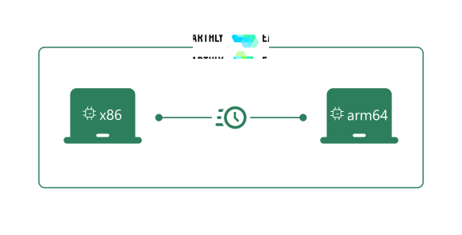

<div class="w-full">
  <div class="px-6 lg:px-10 max-w-7xl m-auto">
    <div class="py-6 px-6 lg:px-10 rounded-xl bg-[#f1fbff] pb-10 mt-6">
      <div>
        <div class="text-2xl lg:text-3xl font-semibold mb-4">
          Run x86 and arm64 Builds Natively
        </div>

        <div class="lg:grid grid-cols-10 gap-2">
          

          <div
            class="text-gray-500 text-lg pt-8 lg:pt-2 pr-6 col-span-5 lg:pl-12"
          >
            Multi-platform builds are easier with Earthly Satellites, because
            both x86 and arm64 architectures are available. You can execute x86
            builds from Apple Silicon computers and arm64 builds from x86
            computers.
            <div class="pt-4">
              Builds run significantly faster because no emulation is
              required.
            </div>
          </div>
        </div>
      </div>
    </div>
  </div>
</div>
